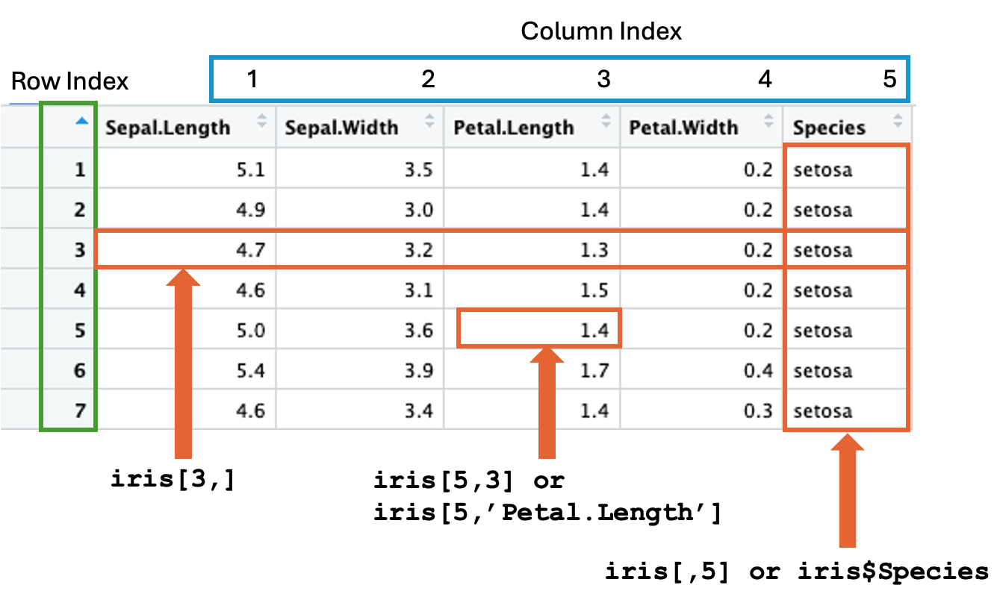

# Decimal
height <- 5.6
# Whole number (Integer)
sample_size <- 15
# Scientific notation
avogadro_number <- 6.023e23Part I
Part I focuses on the basic R objects and commands, such as atomic and object variables, descriptive statistical functions, and data wrangling using base R and tidyverse.
Basic R
Learning Objectives:
This chapter covers common basic R functions used for statistical analysis. After finishing this chapter, you should be able to:
Define R variables.
Know the differences between an atomic variable and an object variable.
Perform arithmetic operators.
Store results in variables.
Format and print the contents of variables to the console.
Calculate non-robust and robust statistics.
Use
seq()andwith()functions.
As R scripting is a hands-on topic, I encourage you to open RStudio alongside this book and try out the code to maximize understanding. Let’s get started.
Rules of Naming Variables
The name of an R variable must follow these two rules:
It must begin with a letter (A-Z or a-z), a dot “
.”, or an underscore “_”, andSubsequent characters can be any combinations of letters, digits (0-9), “
.”, or “_”.
Note that:
Variable names are case-sensitive, e.g.,
volumeandVolumeare different in the eyes of R.Give meaningful names to variables, e.g.,
zone2instead ofzor even worsex. That will help a bunch in understanding the code, even your own code.Watch out that some names have been used by R, e.g.,
c, andheadare function names. However, R is permissive for people to use them as variable names. So, the rule of thumb is to exercise self-discipline not to choose R function names as variable names.
R Objects
Atomic and Object Variables
R classifies variables into two broad categories: atomic type , and object. In the former, the value cannot be split further into smaller R objects. Let us begin with two atomic types: **numeric**, and **character**.
Numeric Variables
The simplest atomic type in R is the numeric data type. That includes whole numbers, decimal numbers, and numbers represented in scientific notation (\(6.023\times10^{23}\)). In mathematics, an atomic variable is a scalar. Here are some examples:
Don’t be mistaken, the e in the scientific notation refers to base 10, e.g., 6.023e23 is \(6.023\times10^{23}\).
<- denotes the assignment operator. Upon execution, the resultant value of the expression on the right-hand side, if no error, is stored in the named variable on the left-hand side. In RStudio, you can see the variable name and its associated value under the Environment tab, which usually occupies the top right quadrant of the RStudio desktop.
Note that R supports two equivalent assignment operators. You can use <- and = interchangeably. I prefer <- to = as = can easily confuse with the equality checking operator ==.
Arithmetic Operators
Arithmetic operators that can apply to numeric variables include +, -, *, /, **, and ^. The last two operators - ** and ^ - are exponential; they perform exactly the same function. Here are some examples:
radius <- 2.5
diameter <- 2*pi*radius
area <- pi*radius**2
volume <- (4/3)*pi*radius^3Note that pi is \(\pi\), which is a built-in variable with the value 3.141593.
E.g., the height of an object is 5.6 feet:
height <- 5.6Character Variables
Besides numeric values, R also support operations of non-numeric values, which is called **character**. To define a character value, embrace the string of characters with a pair of quotes, either a pair of single or double quotes. E.g.,
course <- 'BIOL265'To figure out whether a variable’s type is numeric, character, or something else, use the class() function,
class(course)[1] "character"class(height)[1] "numeric"Obviously, it does not make sense to do math with character type. E.g.,
nucleotides*4Error:
! object 'nucleotides' not foundVectors
One commonly used object in R is vectors. It comprises different components that can be processed collectively as a whole, or individually. A vector can be viewed pictorially as a wagon train. E.g.,
# A simple numeric vector for the days in each month
days_of_month <- c(31, 28, 31, 30, 31, 30, 31, 31, 30, 31, 30, 31)days_of_month is a vector object in R. c() is the function that combines or collates several objects, as its name suggests, into a vector object. Elements are indexed or numbered from 1 to the total number of elements in the vector. You can extract a particular element by specifying the index within a pair of square-brackets. E.g.,
# Days in February
print(days_of_month[2])[1] 28[2] means the 2nd element of a vector. We will discuss more about indexing below.
Here is an example of a character vector:
nucleotides <- c('A','C','G','T')Noteworthy that all elements held inside a vector must have the same data type (homogeneous). For instance, days_of_month contains all numeric values, and nucleotides contains all character values. If you try to combine objects of different data types into a vector, R will convert them to character type. In the example below, even the first and third values are entered as numeric, R coerces them into character type, the common denominator type, "1" and "0".
a_vector <- c(1, "success", 0, "fail")
a_vector[1] "1" "success" "0" "fail" One of the R features that makes arithmetic operations on vectors really convenient is vectorization. For instance, if you want to standardize the values of a sample such that the sample mean and sample variance after standardization become 0 and 1, respectively. The formula for standardization is \(z_{i}=\frac{(x_{i}-\bar{x})}{s}\), where \(\bar{x}\) and \(s\) are the sample mean and sample standard deviation, respectively. Here’s an example
heights <- c(5.5, 6.0, 6.1, 5.7, 5.9, 5.6)
x_bar <- mean(heights)
s <- sd(heights)
std_heights <- (heights - x_bar)/s
std_heights[1] -1.2677314 0.8451543 1.2677314 -0.4225771 0.4225771 -0.8451543The convenience is that you don’t have to specify how to subtract and divide each height individually. Instead, R recognizes the expression (heights-x_bar) is to subtract an atomic x_bar (scalar) from a vector heights. Under the vectorization mechanism, it will subtract x_bar from every height in the vector heights, similarly for the division by s.
vector is only one of the many types of objects supported by R, data frame is another commonly used object types, which will be discussed later.
Factors/Categorical Variables
In R, a categorical variable in statistics is called a factor. A categorical variable is further classified into nominal or ordinal. A nominal variable has no intrinsic order. The factor() function is used to define a categorical variable. E.g., a sample of colors is stored in a vector, and you want to define it as a nominal categorical variable.
colors <- c("Red","Blue","Blue","Red","Green","Green","Blue","Green","Red","Blue")
colors <- factor(colors, levels=c('Red','Blue','Green'))
colors [1] Red Blue Blue Red Green Green Blue Green Red Blue
Levels: Red Blue GreenCategorical variables with intrinsic order are called ordinal variables. E.g., the stages of hypertension.
patients <- c("Stage 2","Hyperintensive","Stage 2","Hyperintensive","elevated","Stage 2","elevated","Stage 1")
patients <- factor(patients,
levels=c('normal','elevated','Stage 1','Stage 2','Hyperintensive'),
ordered = TRUE)
patients[1] Stage 2 Hyperintensive Stage 2 Hyperintensive elevated
[6] Stage 2 elevated Stage 1
Levels: normal < elevated < Stage 1 < Stage 2 < HyperintensiveAs you can see above, the hypertension levels are ordered and connected by a less than sign (<). ### Data frames
Besides vector, another commonly used object is data frame. Almost. all the datasets we will use for analysis are in a data frame format. Simply speaking, a data frame is a tabular or spreadsheet-like object, like an Excel or Google Sheets. A data frame consists of rows and columns. Each row represents a sample. Each column represents a variable. Rows are expected to have equal length, i.e., the same number of columns. If not, R will either complain or pad the missing columns with a special value NA (not available). Let’s take a look at an R’s built-in data frame iris:
# Show the first five rows
head(iris) Sepal.Length Sepal.Width Petal.Length Petal.Width Species
1 5.1 3.5 1.4 0.2 setosa
2 4.9 3.0 1.4 0.2 setosa
3 4.7 3.2 1.3 0.2 setosa
4 4.6 3.1 1.5 0.2 setosa
5 5.0 3.6 1.4 0.2 setosa
6 5.4 3.9 1.7 0.4 setosaYou can peek into the bottom five rows by the tail() function.
tail(iris) Sepal.Length Sepal.Width Petal.Length Petal.Width Species
145 6.7 3.3 5.7 2.5 virginica
146 6.7 3.0 5.2 2.3 virginica
147 6.3 2.5 5.0 1.9 virginica
148 6.5 3.0 5.2 2.0 virginica
149 6.2 3.4 5.4 2.3 virginica
150 5.9 3.0 5.1 1.8 virginicaAs you can see above, the iris data frame consists of five variables (columns). Here are the R functions to show the shape of a data frame:
# the dimension (row x column) of a data frame.
dim(iris)[1] 150 5# Only the number of rows
nrow(iris)[1] 150# Only the number of columns
ncol(iris)[1] 5So, we know that iris contains 150 rows (flowers) and five columns.
Accessing Rows and Columns of a Data Frame
Each element in a data frame can be referenced by row and column indexes like the X-Y Cartesian system. Rows are automatically indexed (numbered), where the 1st row is index 1, the 2nd row is index 2, and the index of the last row is the total number of rows, similarly for columns. But often time, columns are named, such as the columns of iris; Sepal.Width, Sepal.Length, etc., as shown in Figure (@ref(fig:Fig1-1)). The two equivalent indexing schemes can occur in parallel.1
The syntax of accessing individual elements is <data frame name>[row, column]. E.g., the cell at the 5th row and 3rd column of the iris is:
iris[5,3][1] 1.4
If the column index is ignored, all columns of the specified row(s) are returned as shown in Figure (@ref(fig:Fig1-1)). For example, show all columns of the 3rd row by:
# Specify the row number only and leave out the column index.
iris[3,] Sepal.Length Sepal.Width Petal.Length Petal.Width Species
3 4.7 3.2 1.3 0.2 setosaSimilarly, if the row index is skipped, all rows of the specified column(s) are returned (@ref(fig:Fig1-1)). For example,
# Specify only the column index.
head(iris[,5])[1] setosa setosa setosa setosa setosa setosa
Levels: setosa versicolor virginicaR provides an alternative way to access a single column of a data frame. The syntax is <data frame name>$<column name>. The equivalence of iris[,5] is iris$Species:
head(iris$Species)[1] setosa setosa setosa setosa setosa setosa
Levels: setosa versicolor virginicaNote that the $ method only works for a single column. We will discuss a way shortly how to access multiple columns in one R command.
Besides the numeric column index, columns can be referenced by names as shown in Figure (@ref(fig:Fig1-1)). E.g., the Petal.Length of the 5th row:
iris[5,'Petal.Length'][1] 1.4To access more than one column and row, pack the row indices and column names in vectors by the function c(...), which combines or collates several items into a vector object. For example, show the Petal.Length and Sepal.Length of the 123th and 96th rows:
iris[c(123,96),c('Petal.Length','Sepal.Length')] Petal.Length Sepal.Length
123 6.7 7.7
96 4.2 5.7Using row index and column names is the basic accessing method. R provides additional methods to select rows and columns by conditions. More of this topic will be discussed in Chapter 2: Data Wrangling.
Create a Data Frame
Descriptive Statistics
Summary Functions
length() shows the number elements in an object. We will use a sample of pumpkin’s weights for illustration.
# A sample of pumpkins' weights
pumpkins <- c(6.85,6.56,6.23,7.55,4.45,10.14,3.52,6.62,3.76,7.62)The length() shows the number of weights defined in pumpkins.
length(pumpkins)[1] 10To be clear, length() counts the number of elements in an R object, such as a vector or a data frame. If the object is atomic, the function will return 1. For example, in the following example, dna is a character (atomic). The function will return 1, not the number of characters.
dna <- 'ACGTAGC'
length(dna)[1] 1The range() prints the minimum and maximum values - numeric and non-numeric - of an object.
range(pumpkins)[1] 3.52 10.14If you are interested in either the minimum or maximum, here are the corresponding functions:
# The lightness
min(pumpkins)[1] 3.52# The heaviest
max(pumpkins)[1] 10.14Non-robust Statistics
Mean, variance, and standard deviation are non-robust statistics, as they are sensitive to outliers (extreme values).
# A sample of pumpkins' weights
pumpkins <- c(6.85,6.56,6.23,7.55,4.45,10.14,3.52,6.62,3.76,7.62)# The average weight
mean(pumpkins)[1] 6.33# The variance
var(pumpkins)[1] 4.013489# the standard deviation
sd(pumpkins)[1] 2.003369Robust Statistics
Median and quantile are robust statistics, as outliers minimally influence their values.
Median
# A sample of pumpkins' weights
pumpkins <- c(6.85,6.56,6.23,7.55,4.45,10.14,3.52,6.62,3.76,7.62)median(pumpkins)[1] 6.59Quantile
Standard quantile intervals.
quantile(pumpkins) 0% 25% 50% 75% 100%
3.520 4.895 6.590 7.375 10.140 A customized quantile intervals.
quantile(pumpkins, probs = c(0.1,0.9)) 10% 90%
3.736 7.872 A specific quantile.
quantile(pumpkins, probs = c(0.05)) 5%
3.628 quantile(pumpkins, probs = c(0.95)) 95%
9.006 Inter-quantile Region (IQR)
\[IQR = Q3 - Q1\]
IQR(pumpkins)[1] 2.48summary() Function
A data frame may consists of many variables of different types in various ranges. Therefore, it makes a lot of sense to take a glimpse of all variables before analysis. It can be done by the summary() function to reveal:
The variable type of each column.
If the column is numeric, a summary of numeric values.
If the column is categorical (factor), what are the levels and order, if it is ordinal.
Let’s see the summary of iris:
summary(iris) Sepal.Length Sepal.Width Petal.Length Petal.Width
Min. :4.300 Min. :2.000 Min. :1.000 Min. :0.100
1st Qu.:5.100 1st Qu.:2.800 1st Qu.:1.600 1st Qu.:0.300
Median :5.800 Median :3.000 Median :4.350 Median :1.300
Mean :5.843 Mean :3.057 Mean :3.758 Mean :1.199
3rd Qu.:6.400 3rd Qu.:3.300 3rd Qu.:5.100 3rd Qu.:1.800
Max. :7.900 Max. :4.400 Max. :6.900 Max. :2.500
Species
setosa :50
versicolor:50
virginica :50
The summary will show the range (min. and max.) and quantiles of a numeric column. For a categorical variable (factor), it will show the levels with the number of samples (rows) found for each level, e.g., Species is a nominal variable, with 50 samples per species.
Utilities
Printing and Formatting
R provides a function called print() that prints text to the console. E.g.,
print("Hello World!")[1] "Hello World!"radius <- 2.5
diameter <- 2*pi*radius
print(diameter)[1] 15.70796Suppose you want to improve the printout by making it more readable, say "The diameter of a circle with radius 2.5 cm is 15.70796." In such a case, you need the format function paste(). Here’s how to use it:
radius <- 2.5
diameter <- 2*pi*radius
print(paste("The diameter of a circle with radius",radius,"cm is",diameter,"."))[1] "The diameter of a circle with radius 2.5 cm is 15.707963267949 ."The above printout is almost perfect. If you’re picky, you don’t like the extra space separating the diameter and the period in the above message, you can use paste()’s cousin function paste0(). The difference between the two is that paste0() will not automatically add an extra space between each component given to the function. Below is the previous print statement with paste0():
print(paste0("The diameter of a circle with radius",radius,"cm is",diameter,"."))[1] "The diameter of a circle with radius2.5cm is15.707963267949."As you can see, there is no more space between the diameter and the period. But it created other issues; there is no space between “The diameter of a circle with radius” and the actual radius as well. So, when you use paste0(), you have to take care of the space separation yourselves. Here is the final version for using paste0():
print(paste0("The diameter of a circle with radius ",radius," cm is ",diameter,"."))[1] "The diameter of a circle with radius 2.5 cm is 15.707963267949."seq() - create a series of numbers
There are situations where we need a series of equal-interval numbers. For example, override the default breaks - x-ticks - of a histogram, a vector containing all possible outcomes of tossing two dice, i.e, from 2 to 12.
In R, the seq() function generates a list of equal-interval numbers, whole and decimal. seq() takes the following parameters:
from = 1, the default is 1.to = 1, the default is 1.by = 1, the size of the interval between two adjacent numbers. It takes integer and decimal numbers. If it is negative, the series is decreasing.length.outspecifies how many numbers are returned. This option is an alternative tobywhen you care only about how many numbers are generated instead of the interval between them. See the example below.along.with, it generates the same number of numbers according to what is provided to thealong.withparameter.
Examples
By default, seq() begins with 1 and has an interval of 1. E.g., generate 10 integers starting with 1.
seq(10) [1] 1 2 3 4 5 6 7 8 9 10Staring from and ending with.
seq(-10,10) [1] -10 -9 -8 -7 -6 -5 -4 -3 -2 -1 0 1 2 3 4 5 6 7 8
[20] 9 10Specify the interval.
seq(-10,10, by=2) [1] -10 -8 -6 -4 -2 0 2 4 6 8 10A decreasing sequence.
seq(10,by=-1) [1] 10 9 8 7 6 5 4 3 2 1Just specify the desired numbers to be generated. As you can see, the interval is pretty precise.
seq(-5,7,length.out=20) [1] -5.00000000 -4.36842105 -3.73684211 -3.10526316 -2.47368421 -1.84210526
[7] -1.21052632 -0.57894737 0.05263158 0.68421053 1.31578947 1.94736842
[13] 2.57894737 3.21052632 3.84210526 4.47368421 5.10526316 5.73684211
[19] 6.36842105 7.00000000Generate a sequence that matches the same number in another sequence.
x <- seq(1,5)
cat("x =",x,"\n")x = 1 2 3 4 5 y <- seq(-5, along.with=x)
cat("y =",y,"\n")y = -5 -4 -3 -2 -1 Note: What is the difference between cat(...) and print(paste(...)) you saw above? The main difference is that print(paste(...)) creates an R object (a text) and then prints it, while cat(...) directly writes text to the console without creating a formal R object. See example below you will understand the nuance.
msg1 <- print(paste("Hello","World"))[1] "Hello World"print(msg1)[1] "Hello World"msg2 <- cat("Hello","World","\n")Hello World print(msg2)NULLIs it really important? No, unless you’re a R developer.
with()
It set up the context of a data frame so it spares you from using the $ to access the columns of a data frame. It is commonly used together with a function applied to one or more columns. E.g., the median of Petal.Width. It can done in two ways:
# Use $
median(iris$Petal.Width)[1] 1.3# Or, use with()
with(iris, median(Petal.Width))[1] 1.3For the straightforward example above, you do not see the value of with(). Let’s consider a more complicated row selection example. Find Sepal.Length in iris where its Petal.Length is less than 4 and Petal.Width is greater than 1. The $-way is:
iris$Sepal.Length[iris$Petal.Length<4 & iris$Petal.Width>1][1] 5.2 5.6 5.6 5.5 5.8 5.1Here’s the with() version that saves typing iris repeatedly.
with(iris, Sepal.Length[Petal.Length<4 & Petal.Width>1])[1] 5.2 5.6 5.6 5.5 5.8 5.1In short, with() is English, so it improves the readability of R statements. Second, it saves some typing of the data frame’s name. I recommend using with() whenever possible.
Summary
That’s a bare minimum of R scripting required for data analysis. In the next chapter, we will focus on operations applied to data frames. Before you leave, it is useful to recap the R functions discussed in this chapter:
<- |
head() |
sd() |
with() |
c() |
tail() |
range() |
+ |
print() |
dim() |
min() |
- |
paste() |
nrow() |
max() |
* |
paste0() |
ncol() |
median() |
/ |
cat() |
summary() |
quantile() |
** |
class() |
mean() |
IQR() |
^ |
factor() |
var() |
seq() |
== |
Rows can be named as well. This is left as an exercise for the readers.↩︎